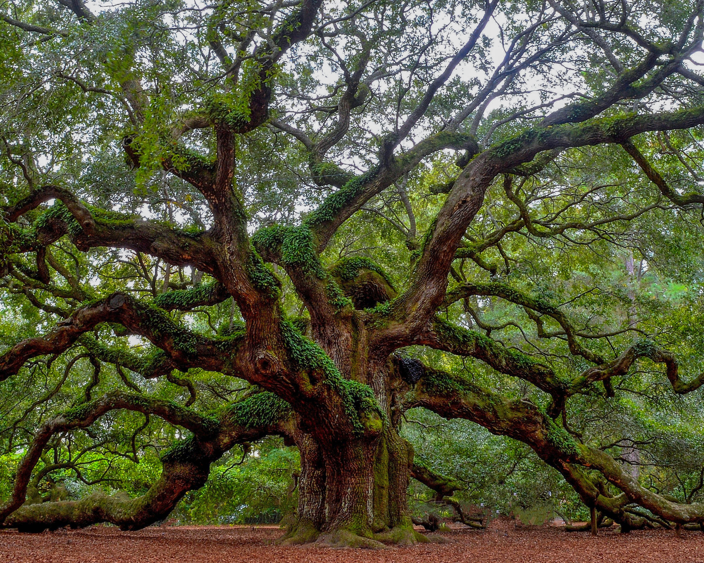
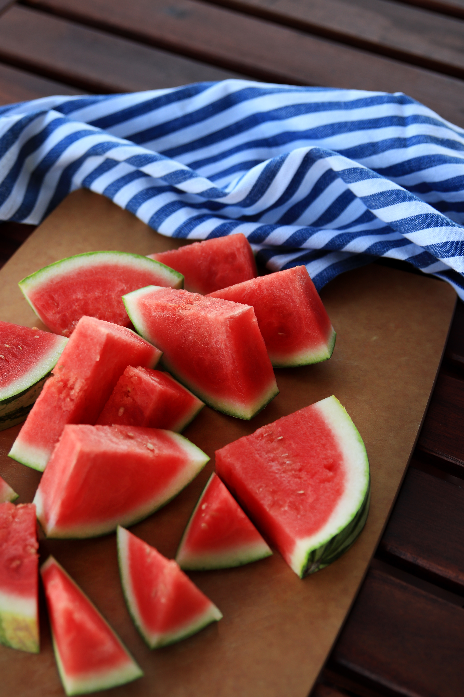
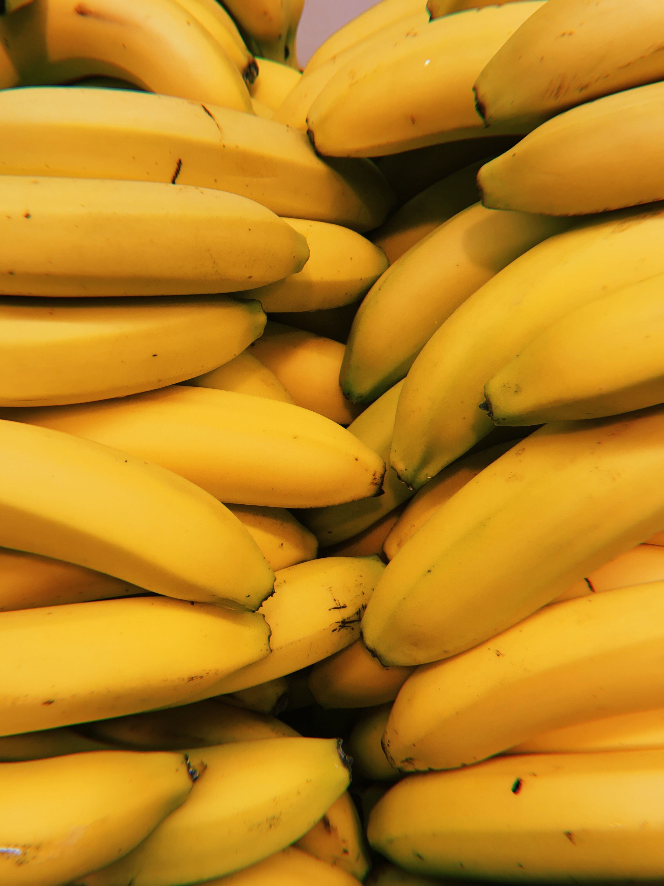

Завершился конкурс «Российское дерево года – 2023»

Вчера завершился конкурс «Российское дерево года – 2023» (и такой есть!). В нем принимали участие 69 выдающихся деревьев со всей страны. Победу одержал дуб из Чувашии. Полный его титул звучит как «Старейшина чувашских дубов».
В Физтехе придумали, как выбрать самый спелый арбуз.

Специалисты Московского физико-технического института разработали приложение для смартфона, которое поможет найти самый спелый арбуз, не разрезая его.
У медведя был план.

У медведя был план, и он его придерживался: камера заповедника «Земля леопарда» засняла упорного гималайского медведя, который раз за разом приходил к дереву, чтобы добраться до пчелиного улья и в итоге добыть себе мед.
Снять стресс и уснуть помогут бананы.

Бананы богаты магнием, которые помогают расслаблению и мышц, и мозга, а содержащийся в банане триптофан способствует выработке гормона сна — мелатонина.
1 миллион 200 тысяч, но не роз.

1 миллион 200 тысяч, но не роз, а подсолнухов подарил на 50-летие свадьбы своей жене фермер Ли Уилсон из Канзаса, зная, что это ее любимый цветок.